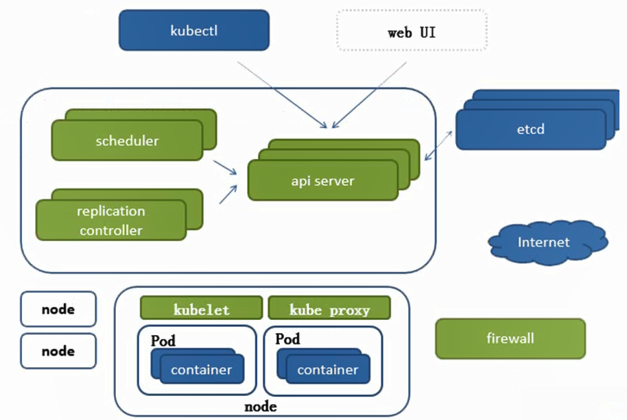

Kubernetes
Page content
https://kubernetes.io/docs/setup/learning-environment/minikube/ Kubernetes 指南 详细教程
架构图

kubectl
命令行控制工具
# Health Check
kubectl cluster-info
etcd
key value 数据库, 存储集群所有重要配置信息(持久化)
api server
所有服务的统一访问入口
ControllerManager
维持副本期望数
Scheduler
负责接受任务, 选择合适节点进行分配任务
kubelet
直接跟容器引擎交互, 实现容器的生命周期管理
kube-proxy
负责写入规则至 IPTABLES, IPVS实现服务映射访问
Pod
运行容器, 可运行多个 所有Pod在一个可直接连通的扁平的网络空间中
- 自主式Pod
- 控制器管理的Pod
其他插件
CoreDNS
可以为集群中的SVC创建一个域名IP的对应关系解析
Dashboard
给K8S集群一个B/S访问体系
Deploying the Dashboard UI
The Dashboard UI is not deployed by default. To deploy it, run the following command:
# 安装 Dashboard
kubectl apply -f https://raw.githubusercontent.com/kubernetes/dashboard/v2.0.0-beta8/aio/deploy/recommended.yaml
# 启动 Dashboard
kubectl proxy
给Dashboard创建用户
https://github.com/kubernetes/dashboard/blob/master/docs/user/access-control/creating-sample-user.md For Powershell:
kubectl -n kubernetes-dashboard describe secret $(kubectl -n kubernetes-dashboard get secret | sls admin-user | ForEach-Object { $_ -Split '\s+' } | Select -First 1)
记下token
eyJhbGciOiJSUzI1NiIsImtpZCI6InRsa01aUUYxbUxhNUozcUJJOUJIMWpiTE82dFN3Wl9wQzZDVUhsMlhPWEUifQ.eyJpc3MiOiJrdWJlcm5ldGVzL3NlcnZpY2VhY2NvdW50Iiwia3ViZXJuZXRlcy5pby9zZXJ2aWNlYWNjb3VudC9uYW1lc3BhY2UiOiJrdWJlcm5ldGVzLWRhc2hib2FyZCIsImt1YmVybmV0ZXMuaW8vc2VydmljZWFjY291bnQvc2VjcmV0Lm5hbWUiOiJrdWJlcm5ldGVzLWRhc2hib2FyZC10b2tlbi05bGptdCIsImt1YmVybmV0ZXMuaW8vc2VydmljZWFjY291bnQvc2VydmljZS1hY2NvdW50Lm5hbWUiOiJrdWJlcm5ldGVzLWRhc2hib2FyZCIsImt1YmVybmV0ZXMuaW8vc2VydmljZWFjY291bnQvc2VydmljZS1hY2NvdW50LnVpZCI6IjE0NzYxMjg4LTRhODItNDBmNy1iZWFkLTgxMDczNDBlZjk2ZCIsInN1YiI6InN5c3RlbTpzZXJ2aWNlYWNjb3VudDprdWJlcm5ldGVzLWRhc2hib2FyZDprdWJlcm5ldGVzLWRhc2hib2FyZCJ9.zCt2BNvrtMthx1Q4eRihnk_mabBMsXsa9Vejb-xQrfLhvl3efAA95wI4sGE_N5-FgTfJFV7QmZ8DTListQi8X8ktTdQ8DXL2PM6uP3td-uGYpwaeI5mCRqTQQzWocP5gBF4HoIAlPqRQAu2oGJpgo-YZ9tli3NTLYgU38splk_22lcQ99Ivv-s14pV8Lu7RBT7LnJoJ5zhk11nD9Ew5huOtcB6xpYZnTdzoDgFGBcHN6IzHL_Y1qgdH7L83dMCXjMdNk5y8EUVWL_LO3SSzDfJQf0F52SZn5di6zIh4L4qZ4lO4xPKjFQTiNJ5xceCTwJhRZ629mPokmrz1SJK-W0g
INGRESS
允许应用程序从外部被访问 官方只能实现四层代理, INGRESS实现七层代理
FEDETATION
跨集群中心, 多K8S统一管理
Prometheus
K8S集群监控
ELK
K8S集群日志统一分析接入平台